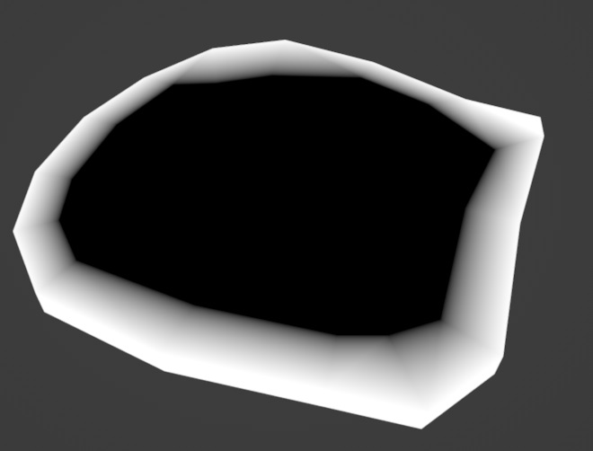
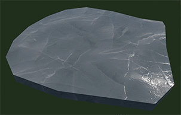
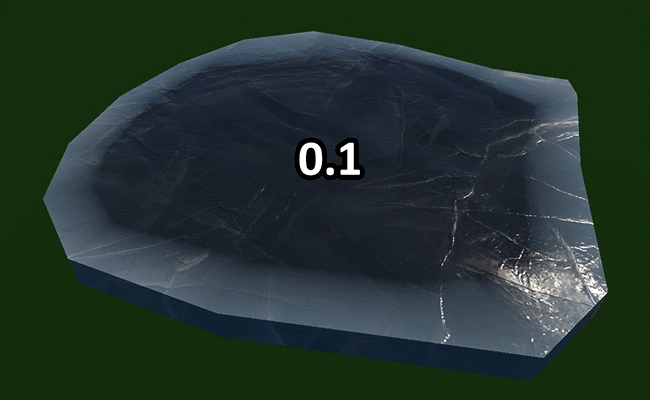
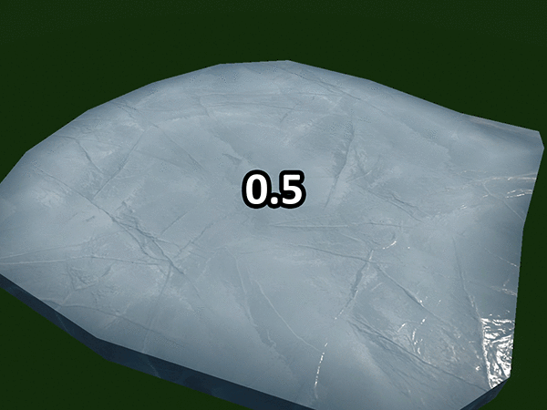
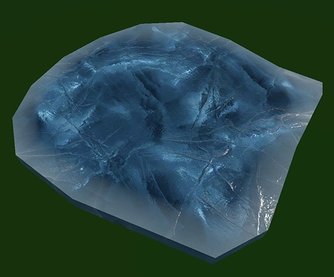
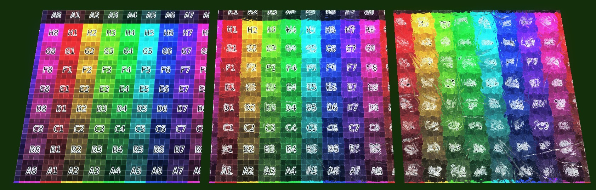

rendinst_parallax_ice
Overview
As the name suggests, this shader is designed to simulate translucent ice using parallax effects. It can be applied to both tiled textures, such as the surface of a frozen lake, and unique assets, like a sculpted iceberg.
This shader blends two detail layers in a manner similar to the rendinst_perlin_layered shader, but without height-based gradients. A third detail layer is blended differently, using only its diffuse texture, which is offset “into” the surface and refracted by the normals of the mixed detail layers.
This shader uses a single UV channel, as rendinst_mask_layered does, and is intended for relatively flat surfaces. Using it on organic shapes may cause visual glitches, so it’s recommended to make such areas opaque.
Required Textures
tex0: D1 Diffuse (RGB) + HeightMap (Alpha)tex1: Diffuse of the internal layer (RGB)tex2: D1 Normal (RG) + Glossiness (A)tex3: D2 Diffuse (RGB) + HeightMap (Alpha)tex4: D2 Normal (RG) + Glossiness (A)
Optional Textures
tex5: D1 transparency mask. If present, this mask is used for blending with the internal layer instead of the diffuse alpha. If a detail needs to be completely transparent or opaque, a black or white placeholder can be used.tex6: D2 transparency mask. Used similarly totex5.tex7: Detail blending mask.
Important
All masks in .folder.blk must have gamma=1 for correct operation.
VertexColor: If available, this is used to force the internal layer to become opaque in black areas, while white areas remain unchanged. This is useful for handling the edges of ice chunks to avoid artifacts at corners. Only the red channel is checked, but for simplicity, it is shown as black and white in the example.
{kind=link}
Parameters
Color:
inner_layer_depth: Distance between the surface and the internal layer.min=0.0(no effect). Default:0.1
inner_layer_mul: Multiplier for the internal layer’s diffuse color, controlling brightness. Default:1.0
inner_layer_power: Exponent that applied to the internal layer’s color after multiplication, used to adjust contrast. Default:1.0Increasing both
powerandmulvalues can produce non-realistic but artistic effects, such as enhanced contrast and color saturation that give a glowing appearance. Use these settings sparingly. Here’s an extreme example withpower=3andmul=3:vcol_masked_mul: Brightness multiplier for blended detail layers in areas marked white in VertexColor.vcol_masked_power: Contrast exponent for the same blended detail layers.ior: Index of refraction, controlling how much the normals of the detail layers distort the internal layer’s diffuse.min=1.0(no effect), Default:1.31.Left to right:
ior=1.0(no refraction),1.31(physically accurate for ice), and an exaggerated4.0. Other parameters, includingdepth, are identical.By default, the shader uses a physically accurate value for ice, but you can adjust the
iorto weaken or exaggerate the effect for visual purposes. Adjustingdepthis also necessary, as increasingiornot only intensifies the internal layer’s distortion by detail normals but also brings it visually closer to the surface.On the left:
ior=1.31(default) anddepth=0.1. On the right:ior=4.0anddepth=1. These are not physically accurate, but they can be used for artistic effect. The internal layer becomes less distinct, which can sometimes be desirable.
{kind=link}
{kind=link}
{kind=link}
{kind=link}
{kind=link}
{kind=link}
{kind=link}
Texture Coordinates:
inner_layer_tile_uv: Tiling of the internal layer.inner_layer_u_offset: Horizontal offset.inner_layer_v_offset: Vertical offset.detail1_tile_uvdetail1_u_offsetdetail1_v_offsetmodify_detail1_mask_uv: Controls whether the transparency mask UVs for this detail are adjusted by the three parameters above. Default:1. This is useful if the mask was specifically painted for the asset, so tiling/offset adjustments don’t break the mask.detail2_tile_uvdetail2_u_offsetdetail2_v_offsetmodify_detail2_mask_uv
Micro Details:
micro_detail_layer1: Index of the first micro detail layer.micro_detail_layer1_uv_scale: Tiling of the first micro detail layer.micro_detail_layer2: Index of the second micro detail layer.micro_detail_layer2_uv_scale: Tiling of the second micro detail layer.
Masks:
mask_gamma: works the same way as in rendinst_perlin_layered. The first two values control the gamma of the detail masks, the third does nothing (since there is no third detail), and the fourth sets the tiling for the Perlin noise. Default:1.0, 1.0, 0.0, 0.1.heightmaps_invert: The first two values control the inversion of the detail blending masks, and the second pair controls the inversion of the transparency masks for those details. Default:0,0, 0,0.